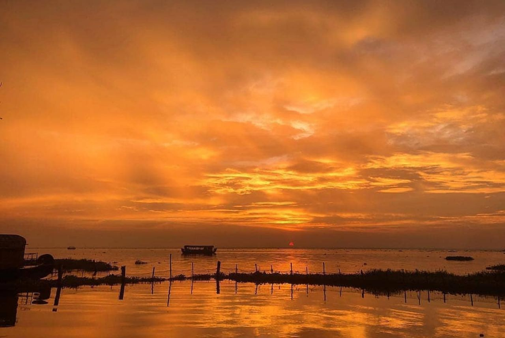
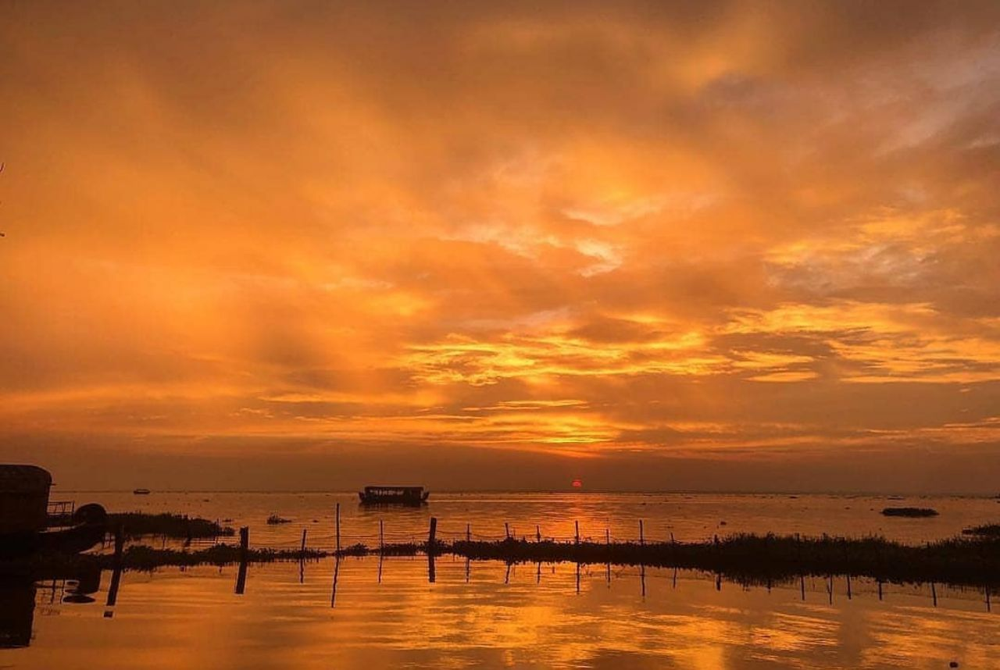

1. Thikkoti Lighthouse
Said to be built on the remains of a shipwreck, the Thikkoti Lighthouse is one of the major attractions of Kozhikode. Located on a rocky shoreline, the place is best known for the scenic views it offers as well as several species of nomadic birds.

2. Beypore
Beypore , an ancient port town in Kozhikode formerly called as Vaypura / Vadaparappanad. The famous ruler of Mysore , Tipu Sultan, named the town "Sultan Pattanam".Beypore port was historically famous for trading with the Middle East. It is one of the oldest ports in Kerala.
3. lion's park
Located next to the light house on Kozhikode beach, this theme based amusement park for children is known for its thrilling rides and beautiful views of the sunset.
4. Vellari Mala
Meandering along the rocky terrain is a tributary of River Chaliyar called Kanjirapuzha. This water body forms many beautiful waterfalls and brooks at various points of its journey, which is a treat to your eyes.

5. Kadalundi Bird Sanctuary
Home to over 100 species of animal-life; Kadalundi Bird Sanctuary is famous for the wide variety of fresh water fishes that can be sighted in the river here.
 
